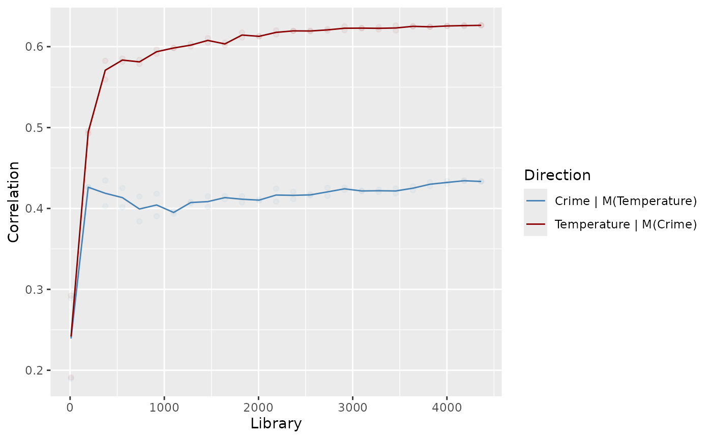

Chicago crime/temperature example
chicago.RmdThe data
To demonstrate the usefulness of EDM in estimating the impact of causal variables, we use a real-world dataset that reflects daily temperature and crime levels in Chicago, which we make available in the chicago.csv file.
First, we load the time series into R:
chicagoURL <- url("https://github.com/EDM-Developers/fastEDM/raw/master/vignettes/chicago.csv")
chicago <- read.csv(chicagoURL)
head(chicago)
#> Time Temperature Crime
#> 1 1 24.08 1605
#> 2 2 19.04 1119
#> 3 3 28.04 1127
#> 4 4 30.02 1154
#> 5 5 35.96 1251
#> 6 6 33.08 1276Plotting the two time series shows:
library(ggplot2)
df <- data.frame(list(
t = rep(chicago$Time, 2),
variable = c(rep("Crime", nrow(chicago)), rep("Temperature", nrow(chicago))),
value = c(chicago$Crime, chicago$Temperature)))
ggplot(df, aes(x = t)) +
geom_line(aes(y = value, color = variable)) +
labs(colour = "Time series")When plotted as a scatter plot, there appears to be some linear correlation between the variables:
ggplot(chicago, aes(x = Temperature, y=Crime)) + geom_point(color="#F8766D")Calculating the linear correlation between Crime and Temperature:
cor(chicago["Temperature"], chicago["Crime"])
#> Crime
#> Temperature 0.461996shows a mild correlation, however the causal structure (if any) and its direction is not shown.
Find the optimal embedding dimension
Now we use edm to find the optimal embedding dimension of the Temperature time series. We check the values of \(E = 2, \dots 10\).
library(fastEDM)
# Suppress the progress bar in vignettes, as it confuses knitr.
formals(edm)$showProgressBar <- FALSE
res <- edm(chicago["Time"], chicago["Temperature"], E=2:10, numThreads=4)
#> Summary of predictions
#> E library theta rho mae
#> 1 2 2181 1 0.9053390 7.103633
#> 2 3 2181 1 0.9104060 6.880627
#> 3 4 2181 1 0.9169653 6.622584
#> 4 5 2181 1 0.9189371 6.540160
#> 5 6 2181 1 0.9212067 6.491190
#> 6 7 2181 1 0.9225950 6.461038
#> 7 8 2181 1 0.9223688 6.513701
#> 8 9 2181 1 0.9218043 6.541796
#> 9 10 2181 1 0.9218961 6.555065
#> Number of neighbours (k) is set to between 3 and 11From the rho column we can see that the prediction accuracy is maximised when \(E = 7\), so we take this as our estimate of the embedding dimension.
Convergent cross-mapping
The edm command can also run the cross-mapping task, which allows us to ascertain the causal links between the crime and temperature time series.
# Find the maximum library size for the dataset.
res <- edm(chicago["Time"], chicago["Temperature"], E=7,
full=TRUE, saveManifolds=TRUE, verbosity=0)
libraryMax <- nrow(res$Ms[[1]])
# Choose a linearly spaced grid of library sizes to evaluate the S-map algorithm on.
libs <- ceiling(seq(10, libraryMax, length.out=25))
# Run the convergent cross-mapping in each causal direction.
crimePredictsTemp <- edm(chicago["Time"], chicago["Crime"], chicago["Temperature"], numReps=2,
algorithm="smap", E=7, library=libs, k=100, numThreads=4, verbosity=0)
tempPredictsCrime <- edm(chicago["Time"], chicago["Temperature"], chicago["Crime"], numReps=2,
algorithm="smap", E=7, library=libs, k=100, numThreads=4, verbosity=0)Note: These last two lines are the most computationally demanding. They may take a minute to finish. Choosing a machine with more CPU cores or faster cores will help significantly.
Plotting the results gives:
tidyDF <- data.frame(list(
Library = c(
crimePredictsTemp$summary$library,
tempPredictsCrime$summary$library
),
Direction = c(
rep("Temperature | M(Crime)", nrow(crimePredictsTemp$summary)),
rep("Crime | M(Temperature)", nrow(tempPredictsCrime$summary))
),
Correlation = c(
crimePredictsTemp$summary$rho,
tempPredictsCrime$summary$rho
)))
ggplot(tidyDF, aes(x = Library, y = Correlation)) +
geom_line(aes(color = Direction)) + scale_color_manual(values = c("steelblue", "darkred")) +
geom_point(data = tempPredictsCrime$stats, aes(x = library, y = rho), alpha = 0.05, color = "steelblue") +
geom_point(data = crimePredictsTemp$stats, aes(x = library, y = rho), alpha = 0.05, color = "darkred")
In this plot, we can see that one direction shows a significant increase in accuracy as \(L\) increases, whereas the other direction is pretty flat. The direction which increases the most is the \(\texttt{Temperature} \mid M(\texttt{Crime})\) direction. This notation means we used \(\texttt{Crime}\) to predict \(\texttt{Temperature}\), and due to the backward nature of EDM means it refers to the causal link \(\texttt{Temperature} \to M(\texttt{Crime})\). Therefore, we’d conclude that there is a causal link from temperature to crime, though no link in the reverse direction (which would be implausible).